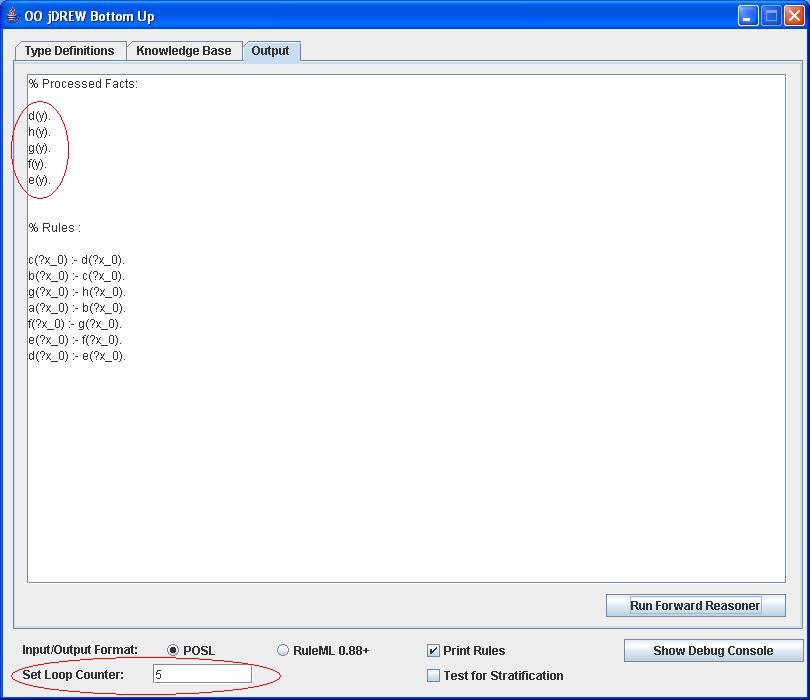
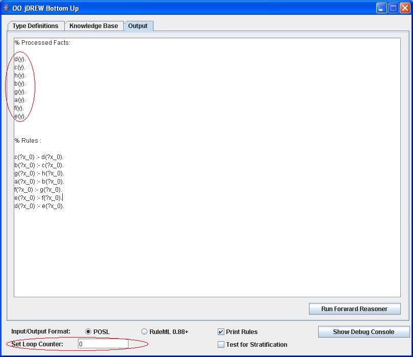
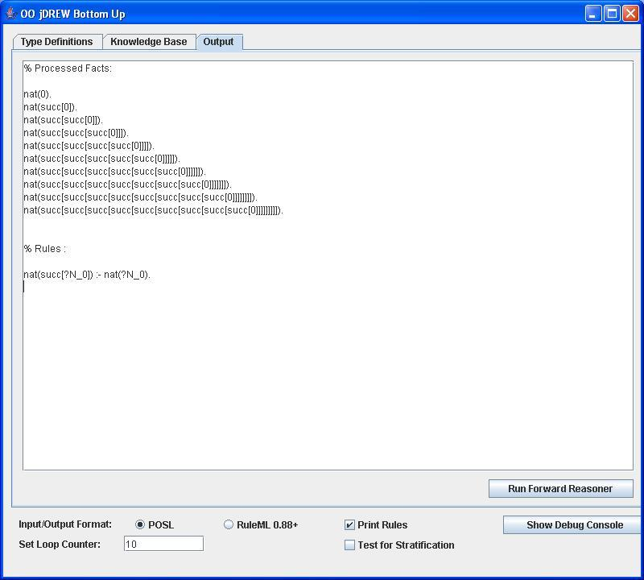
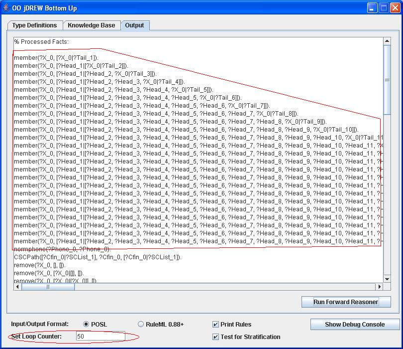

| OO jDREW | |||||||||||||
|
Examples of Using the Loop Counter for BU IterationsThe purpose of the loop counter is to prevent infinite loops: it will halt the BU reasoning engine and display what it has derived so far. If the loop counter is set to "0" then the BU reasoning engine ignores the loop counter all together.Simple Example a(?x) :- b(?x). b(?x) :- c(?x). c(?x) :- d(?x). d(?x) :- e(?x). e(?x) :- f(?x). f(?x) :- g(?x). g(?x) :- h(?x). h(y). If we set the loop counter to 5 it will derive the first 5 facts that it can derive from this knowledge base:  If we set the loop counter to 0 (default) it derives all of the facts it can:  Natural numbers example nat(0).nat(succ[?N]) :- nat(?N). In unrestricted forward mode it will enter an infinite loop in an attempt to derive all natural numbers. If we set the loop counter to 10 it will not enter an infinite loop and will derive the first 10 natural number instead:  Example using NBBizKB use case If we use the non-Datalog NBBizKB use case when we try to run the forward reasoner unrestricted it goes into a infinite loop, but if we set the loop counter to 50 if will stop and show us what it has derived so far.Here is a link to NBBizKB rules in POSL format. This is what OO jDREW will produce:  |
Last Updated: By: |
|||||||||||
{kind=link}
{kind=link}
{kind=link}
{kind=link}